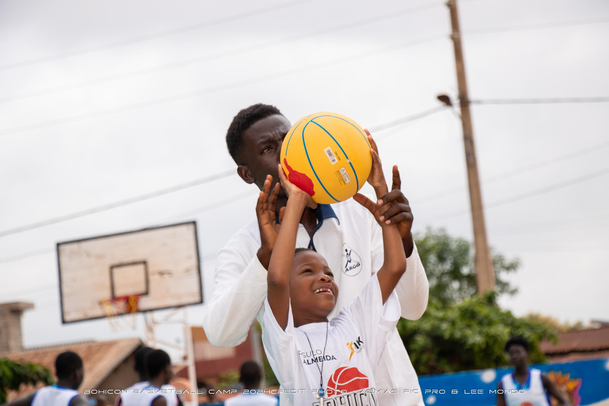

Le mini-basket : Pourquoi et quels avantages pour nos enfants ?
Le mini-basket, c’est bien plus qu’un simple sport pour enfants. C’est une école de la vie, un terrain d’apprentissage et un espace d’épanouissement complet. À SIKA Basketball, nous croyons fermement que l’initiation au basketball dès le plus jeune âge est une clé précieuse pour bâtir une jeunesse forte, disciplinée et confiante.
Mais alors, pourquoi choisir le mini-basket pour nos enfants ? Quels sont ses avantages concrets ?
-
Une activité adaptée à l’âge et au développement des enfants
Le mini-basket est conçu pour les enfants de 5 à 11 ans, avec des règles simplifiées, un matériel adapté (paniers abaissés, ballons légers), et une approche ludique. L’objectif n’est pas la performance, mais l’initiation progressive au jeu, en respectant le rythme de croissance physique et psychologique de chaque enfant. -
Un outil de développement moteur et cognitif
Par la diversité des gestes (sauter, courir, dribbler, passer, tirer), le mini-basket stimule l’équilibre, la coordination, la latéralisation et la perception dans l’espace. Il améliore aussi l’attention, la mémoire visuelle, la prise de décision rapide et la capacité à anticiper, ce qui profite à la fois au sport et à l’école. -
Un vecteur de socialisation et de valeurs
Jouer en équipe, respecter les règles, écouter l’encadreur, partager les victoires et les défaites : le mini-basket inculque dès le plus jeune âge des valeurs de discipline, d’entraide, de respect et de responsabilité. Ces valeurs forgent le caractère et favorisent une meilleure intégration sociale. -
Une meilleure estime de soi
À travers les encouragements, les progrès visibles et les petites victoires, l’enfant prend confiance en lui. Il apprend à accepter ses erreurs, se relever, oser, persévérer. Cet état d’esprit positif ne reste pas sur le terrain : il s’étend à la maison, à l’école et dans toute la vie quotidienne. -
Une porte d’entrée vers un avenir sportif
Le mini-basket peut éveiller des vocations. Certains enfants développent très tôt une passion qui les conduira à intégrer des académies, des clubs ou des sélections régionales. À SIKA Basketball, nous accompagnons ce cheminement avec bienveillance et ambition, car former les basketteurs de demain commence dès aujourd’hui.
En résumé…
Le mini-basket est une activité complète, bénéfique, formatrice et passionnante. C’est une formidable opportunité pour les enfants de grandir avec énergie, esprit d’équipe et confiance en eux. Et pour les parents, c’est l’assurance d’un environnement sain, éducatif et porteur d’avenir.
Le mini-basket est une activité complète, bénéfique, formatrice et passionnante. C’est une formidable opportunité pour les enfants de grandir avec énergie, esprit d’équipe et confiance en eux. Et pour les parents, c’est l’assurance d’un environnement sain, éducatif et porteur d’avenir.
Chez SIKA Basketball, le mini-basket est une priorité.
Offrons à nos enfants un départ fort, joyeux et structuré sur le terrain… et dans la vie !